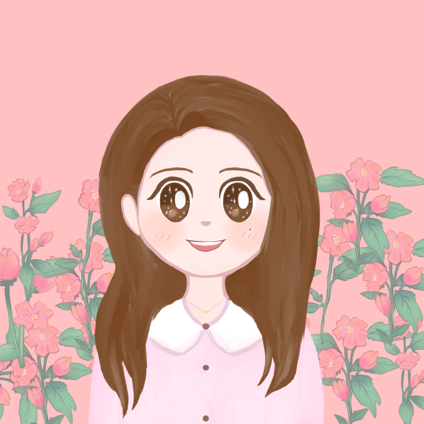
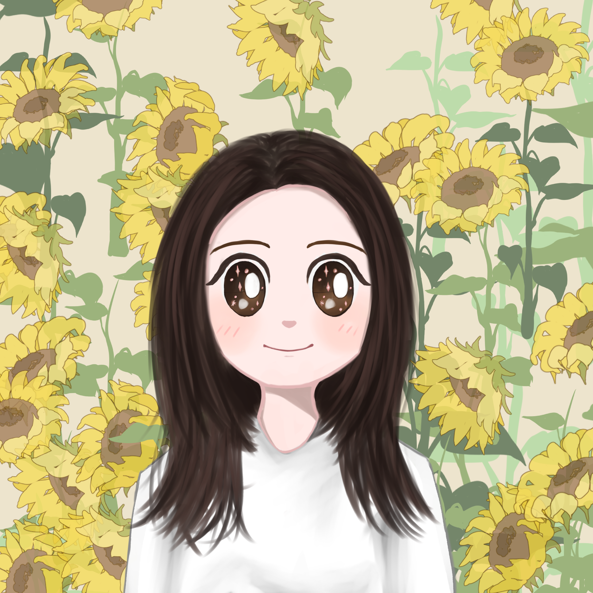

야무진 아동발달심리상담센터
아이들의 건강한 성장을 지원합니다
홈
선생님 소개
치료 안내
내부 시설
수업료 안내
오시는 길
전문 선생님 소개
야무진 아동발달심리상담센터의 전문가들입니다
김혜주 선생님
센터장 / 언어치료사
학력
루터대학교 언어치료학과 졸업
루터대학교 루터대학원 언어치료학과 졸업
경력
서울 광진아동청소년 발달센터
서울 프라나이비인후과
아름다운목소리이비인후과
동탄 아주시원한 이비인후과 부설 힐메이트심리상담센터
성남 우리아동발달상담센터
잠실 연세수언어심리연구원
릴리프맘 홈티
야무진홈티
자격증
1급 언어재활사
인지학습상담전문가(2급)
인지행동상담사(3급)

심혜수 선생님
놀이치료사
학력
숙명여자대학교 가족자원경영학과
숙명여자대학교 일반대학원 아동심리치료 전공
경력
굿네이버스 좋은마음센터 안양지부
아이들 세상의원
숙명여자대학교 대학원 아동복지학과내 놀이치료실
아동청소년상담센터 맑음
휴앤아이 심리상담센터
아주시원한 이비인후과 부설 힐메이트 심리상담센터
동탄 위드아동발달상담소
허그맘허그인 평촌점
연세해피마인드 정신과 부설 연구소
365 늘봄 아동심리발달센터
자격증
놀이심리상담사 2급
보육교사 2급

문인혜 선생님
언어치료사
학력
가천대학교 특수치료대학원 언어치료학 전공
경력
연수종합사회복지관
다연심리재활교육센터
동탄 아주시원한 이비인후과 부설 힐메이트심리상담센터
시립목동어린이집
구름온 심리상담센터
자격증
1급 언어재활사